전기공사기사 (2016-05-08 기출문제)
1과목: 전기응용 및 공사재료
1. 저압 나트륨등에 대한 설명 중 틀린 것은?
- 광원의 효율은 방전등 중에서 가장 우수하다.
- 가시광의 대부분이 단일 광색이므로 연색지수가 낮다.
- 물체의 형체나 요철의 식별에 우수한 효과가 있다.
- 연색성이 우수하여 도로, 터널의 조명등에 쓰인다.
(정답률: 69%)

2. 1kW 전열기를 사용하여 5L의 물을 20℃에서 90℃로 올리는데 30분이 걸렸다. 이 전열기의 효율은 약 몇 %인가?
- 70
- 78
- 81
- 93
(정답률: 74%)
3. 전기 부식을 방지하기 위한 전기 철도측에서의 방법 중 틀린 것은?
- 변전소 간격을 단축할 것
- 귀선로의 저항을 적게 할 것
- 도상의 누설 저항을 적게 할 것
- 전차선(트롤리선) 전압을 승압할 것
(정답률: 56%)
4. 동일 정격의 다이오드를 병렬로 사용하면?
- 역전압을 크게 할 수 있다.
- 필터 회로가 필요 없게 된다.
- 전원 변압기를 사용할 수 있다.
- 순방향 전류를 증가시킬 수 있다.
(정답률: 83%)
5. 비닐막 등의 접착에 주로 사용하는 가열 방식은?
- 유전가열
- 저항가열
- 아크가열
- 유도가열
(정답률: 86%)
6. 3상 유도전동기를 급속히 정지 또는 감속시킬 경우, 가장 손쉽고 효과적인 제동법은?
- 역상 제동
- 회생 제동
- 발전 제동
- 와전류 제동
(정답률: 90%)
7. 금속의 화학적 성질로 틀린 것은?
- 산화되기 쉽다.
- 전자를 잃기 쉽고, 양이온이 되기 쉽다.
- 이온화 경향이 클수록 환원성이 강하다.
- 산과 반응하고, 금속의 산화물은 염기성이다.
(정답률: 73%)
8. 기동 토크가 가장 큰 단상 유도 전동기는?
- 콘덴서 전동기
- 반발 기동 전동기
- 분상기동 전동기
- 콘덴서 기동 전동기
(정답률: 91%)
9. 반도체 사이리스터에 의한 속도 제어 중 주파수 제어는?
- 계자 제어
- 인버터 제어
- 컨버터 제어
- 초퍼 제어
(정답률: 63%)
10. 반도체에 빛이 가해지면 전기저항이 변화되는 현상은?
- 홀효과
- 광전효과
- 지벡효과
- 열진동 효과
(정답률: 90%)
11. 납축전지가 충분히 충전되었을 때 양극판은 무슨 색인가?
- 황색
- 청색
- 적갈색
- 회백색
(정답률: 73%)
12. 나트륨등의 이론적 발광 효율은 약 몇 lm/W인가?
- 255
- 300
- 395
- 500
(정답률: 64%)
13. 합성 수지관 배선공사에서 틀린 것은?
- 관 말단 부분에서는 전선관 보호를 위하여 부싱을 사용한다.
- 합성 수지관 내에서 전선에 접속점을 만들어서는 안된다.
- 배선은 절연전선(옥외용 비닐 절연전선을 제외한다.)을 사용한다.
- 합성 수지관을 새들 등으로 지지하는 경우는 그 지지점간의 거리를 1.5m 이하로 한다.
(정답률: 52%)
14. 분전반의 소형 덕트 폭으로 틀린 것은?
- 전선 굵기 35mm2이하는 덕트 폭 5cm
- 전선 굵기 95mm2이하는 덕트 폭 10cm
- 전선 굵기 240mm2이하는 덕트 폭 15cm
- 전선 굵기 400mm2이하는 덕트 폭 20cm
(정답률: 65%)
15. 버스덕트 공사에 대한 설명으로 옳은 것은?
- 덕트의 끝부분을 개방한다.
- 건조한 노출장소나 점검할 수 있는 은폐장소에 시설한다.
- 덕트를 조영재에 붙이는 경우에는 덕트의 지지점간의 거리를 최대 2m 이하로 한다.
- 저압 옥내배선의 시동전압이 400V 이상인 경우에는 덕트에 제 3종 접지공사를 한다.
(정답률: 66%)
16. 알루미늄 전선 접속시 가는 전선을 박스 안에서 접속하는데 사용되는 슬리브는?
- S형 슬리브
- 종단 겹침용 슬리브
- 매킹 타이어 슬리브
- 직선 겹침용 슬리브
(정답률: 76%)
17. 변압기유로 쓰이는 절연유에 요구되는 특성이 아닌 것은?
- 점도가 클 것
- 절연내력이 클 것
- 인화점이 높을 것
- 비열이 커서 냉각 효과가 클 것
(정답률: 88%)
18. 가공 송전선로의 ACSR 전선 등에 설치되는 진동 방지용 장치가 아닌 것은?
- Damper
- PG Clamp
- Armor rod
- Spacer Damper
(정답률: 76%)
19. 배전반 및 분전반에 대한 설명 중 틀린 것은?
- 개폐기를 쉽게 개폐할 수 있는 장소에 시설하여야 한다.
- 옥측 또는 옥외 시설하는 경우는 방수형을 사용하여야 한다.
- 노출하여 시설되는 분전반 및 배전반의 재료는 불연성의 것이어야 한다.
- 난연성 합성수지로 된 것은 두께가 최소 2mm 이상으로 내 아크성인 것이어야 한다.
(정답률: 83%)
20. 가공전선로의 지지물에 시설하는 지선으로 연선을 사용할 경우 소선의 지름은 최소 몇 mm 이상의 금속선인가?
- 2.1
- 2.3
- 2.6
- 2.8
(정답률: 79%)
2과목: 전력공학
21. 3상 3선식 송전선로의 선간거리가 각각 50cm, 60cm, 70cm인 경우 기하학적 평균 선간거리는 약 몇 cm인가?
- 50.4
- 59.4
- 62.8
- 64.8
(정답률: 31%)
22. 송전 계통에서 자동재폐로 방식의 장점이 아닌 것은?
- 신뢰도 향상
- 공급 지장 시간의 단축
- 보호 계전 방식의 단순화
- 고장상의 고속도 차단, 고속도 재투입
(정답률: 30%)
23. 수력 발전소에서 흡출관을 사용하는 목적은?
- 압력을 줄인다.
- 유효 낙차를 늘린다. .
- 속도 변동률을 작게 한다.
- 물의 유선을 일정하게 한다.
(정답률: 29%)
24. 초고압용 차단기에 개폐 저항기를 사용하는 주된 이유는?
- 차단속도 증진
- 차단전류 감소
- 이상전압 억제
- 부하설비 증대
(정답률: 30%)
25. 송전단 전압이 66kV이고, 수전단 전압이 62kV로 송전 중이던 선로에서 부하가 급격히 감소하여 수전단 전압이 63.5kV가 되었다. 전압 강하율은 약 몇 %인가?
- 2.28
- 3.94
- 6.06
- 6.45
(정답률: 27%)
26. 이상전압에 대한 방호장치가 아닌 것은?
- 피뢰기
- 가공지선
- 방전 코일
- 서지 흡수기
(정답률: 29%)
27. 154kV 송전선로의 전압을 345kV로 승압하고 같은 손실률로 송전한다고 가정하면 송전전력은 승압전의 약 몇 배 정도인가?
- 2
- 3
- 4
- 5
(정답률: 27%)
28. 초고압 송전선로에 단도체 대신 복도체를 사용할 경우 틀린 것은?
- 전선의 작용 인덕턴스를 감소시킨다.
- 선로의 작용정전용량을 증가시킨다.
- 전선 표면의 전위 경도를 저감시킨다.
- 전선의 코로나 임계 전압을 저감시킨다.
(정답률: 31%)
29. 그림과 같은 정수가 서로 같은 평행 2회선 송전선로의 4단자 정수 중 B에 해당되는 것은?
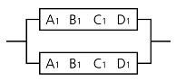
- 4B1
- 2B1
- 1/2B1
- 1/4B1
(정답률: 26%)
30. 송전 계통에서 1선 지락 시 유도 장해가 가장 적은 중성점 접지 방식은?
- 비접지 방식
- 저항접지 방식
- 직접접지 방식
- 소호 리액터접지 방식
(정답률: 28%)
31. 송전전압 154kV, 2회선 선로가 있다. 선로 길이가 240㎞이고 선로의 작용 정전용량이 0.02㎌/㎞라고 한다. 이것을 자기 여자를 일으키지 않고 충전하기 위해서는 최소한 몇 MVA이상의 발전기를 이용하여야 하는가? (단, 주파수는 60㎐이다.)
- 78
- 86
- 89
- 95
(정답률: 22%)
32. 방향성을 갖지 않는 계전기는?
- 전력 계전기
- 과전류 계전기
- 비율차동 계전기
- 선택 지락 계전기
(정답률: 22%)
33. 22.9kV-Y 3상 4선식 중성선 다중접지 계통의 특성에 대한 내용으로 틀린 것은?
- 1선 지락 사고 시 1상 단락전류에 해당하는 큰 전류가 흐른다.
- 전원의 중성점과 주상 변압기의 1차 및 2차를 공통의 중성선으로 연결하여 접지한다.
- 각 상에 접속된 부하가 불평형일 때도 불완전 1선 지락 고장의 검출 감도가 상당히 예민하다.
- 고저압 혼촉사고 시에는 중성선에 막대한 전위 상승을 일으켜 수용가에 위험을 줄 우려가 있다.
(정답률: 17%)
34. 선로 전압강하 보상기(LDC)에 대한 설명으로 옳은 것은?
- 승압기로 저하된 전압을 보상하는 것
- 분로 리액터로 전압 상승을 억제하는 것
- 선로의 전압 강하를 고려하여 모선 전압을 조정하는 것
- 직렬 콘덴서로 선로의 리액턴스를 보상하는 것
(정답률: 29%)
35. 송전선로의 현수 애자련 연면 섬락과 가장 관계가 먼 것은?
- 댐퍼
- 철탑 접지 저항
- 현수 애자련의 개수
- 현수 애자련의 소손
(정답률: 30%)
36. 각 전력계통을 연계선으로 상호 연결하면 여러 가지 장점이 있다. 틀린 것은?
- 경계 급전이 용이하다.
- 주파수의 변화가 작아진다.
- 각 전력계통의 신뢰도가 증가한다.
- 배후전력(back power)이 크기 때문에 고장이 적으며 그 영향의 범위가 작아진다.
(정답률: 30%)
37. 유효낙차 100m, 최대 사용수량 20m3/s인 발전소의 최대 출력은 약 몇 kW인가? (단, 수차 및 발전기의 합성 효율은 85%라 한다.)
- 14160
- 16660
- 24990
- 33320
(정답률: 27%)
38. 3상 3선식 송전선로에서 연가의 효과가 아닌 것은?
- 작용 정전용량의 감소
- 각 상의 임피던스 평형
- 통신선의 유도장해 감소
- 직렬공진의 방지
(정답률: 24%)
39. 각 수용가의 수용설비 용량이 50kW, 100kW, 80kW, 60kW, 150kW이며, 각각의 수용률이 0.6, 0.6, 0.5, 0.5, 0.4일 때 부하의 부등률이 1.3이라면 변압기의 용량은 약 몇 [kVA]가 필요한가? (단, 평균 부하 역률은 80%라고 한다.)
- 142
- 165
- 183
- 212
(정답률: 28%)
40. 그림과 같은 주상변압기 2차측 접지공사의 목적은?
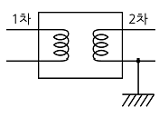
- 1차측 과전류 억제
- 2차측 과전류 억제
- 1차측 전압 상승 억제
- 2차측 전압 상승 억제
(정답률: 27%)
3과목: 전기기기
41. 계자 권선이 전기자에 병렬로만 연결된 직류기는?
- 분권기
- 직권기
- 복권기
- 타여자기
(정답률: 29%)
42. 정격출력 10000kVA, 정격전압 6600V, 정격 역률 0.6인 3상 동기 발전기가 있다. 동기 리액턴스 0.6p‧u인 경우의 전압 변동률[%]은?
- 21
- 31
- 40
- 52
(정답률: 13%)
43. 직류 분권 발전기에 대한 설명으로 옳은 것은?
- 단자 전압이 강하하면 계자 전류가 증가한다.
- 부하에 의한 전압의 변동이 타여자 발전기에 비하여 크다.
- 타여자 발전기의 경우보다 외부특성 곡선이 상향으로 된다.
- 분권권선의 접속방법에 관계없이 자기여자로 전압을 올릴 수가 있다.
(정답률: 18%)
44. 3상 유도전압 조정기의 동작 원리 중 가장 적당한 것은?
- 두 전류 사이에 작용하는 힘이다.
- 교번 자계의 전자유도 작용을 이용한다.
- 충전된 두 물체 사이에 작용하는 힘이다.
- 회전자계에 의한 유도 작용을 이용하여 2차 전압의 위상전압 조정에 따라 변화한다.
(정답률: 25%)
45. 정격용량 100kVA인 단상 변압기 3대를 △-△결선하여 300kVA의 3상 출력으르 얻고 있다. 한 상에 고장이 발생하여 결선을 V결선으로 하는 경우 a)뱅크 용량 kVA, b) 각 변압기의 출력 kVA은?
- a) 253, b) 126.5
- a) 200, b) 100
- a) 173, b) 86.6
- a) 152, b) 75.6
(정답률: 34%)
46. 직류기의 전기자 반작용 결과가 아닌 것은?
- 주자속이 감소한다.
- 전기적 중성축이 이동한다.
- 주자속에 영향을 미치지 않는다.
- 정류자편 사이의 전압이 불균일하게 된다.
(정답률: 32%)
47. 자극수 p, 파권, 전기자 도체수가 z인 직류 발전기를 N[rpm]의 회전속도로 무부하 운전할 때 기전력이 E[V]이다. 1극당 주자속[Wb]은?
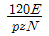
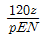
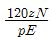
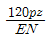
(정답률: 33%)
48. 동기 발전기의 단락비를 계산하는 데 필요한 시험은?
- 부하 시험과 돌발 단락 시험
- 단상 단락 시험과 3상 단락 시험
- 무부하 포화 시험과 3상 단락 시험
- 정상, 역상, 영상 리액턴스의 측정 시험
(정답률: 31%)
49. SCR에 관한 설명으로 틀린 것은?
- 3단자 소자이다.
- 스위칭 소자이다.
- 직류 전압만을 제어한다.
- 적은 게이트 신호로 대전력을 제어한다.
(정답률: 32%)
50. 3상 유도전동기의 기동법 중 Y-△기동법으로 기동 시 1차 권선의 각 상에 가해지는 전압은 기동 시 및 운전시 각각 정격전압의 몇 배가 가해지는가?
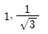
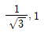
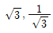
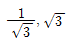
(정답률: 24%)
51. 유도 전동기의 최대 토크를 발생하는 슬립을 st, 최대 출력을 발생하는 슬립을 sp라 하면 대소 관계는?
- sp = st
- sp > st
- sp < st
- 일정치 않다.
(정답률: 20%)
52. 단권 변압기 2대를 V결선하여 선로 전압 3000V를 3300V로 승압하여 300kVA의 부하에 전력을 공급하려고 한다. 단권 변압기 1대의 자기 용량은 몇 kVA인가?
- 9.09
- 15.72
- 21.72
- 31.50
(정답률: 17%)
53. 단상 전파 정류에서 공급전압이 E일 때, 무부하 직류 전압의 평균값은? (단, 브리지 다이오드를 사용한 전파 정류회로이다.)
- 0.90E
- 0.45E
- 0.75E
- 1.17E
(정답률: 29%)
54. 3상 권선형 유도 전동기의 토크 속도 곡선이 비례추이 한다는 것은 그 곡선이 무엇에 비례해서 이동하는 것을 말하는가?
- 슬립
- 회전수
- 2차 저항
- 공급 전압의 크기
(정답률: 27%)
55. 평형 3상 회로의 전류를 측정하기 위해서 변류비 200 : 5의 변류기를 그림과 같이 접속하였더니 전류계의 지시가 1.5A 이었다. 1차 전류는 몇 A인가?
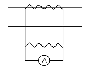
- 60
- 60√3
- 30
- 30√2
(정답률: 29%)
56. 동기 조상기의 구조상 특이점이 아닌 것은?
- 고정자는 수차 발전기와 같다.
- 계자 코일이나 자극이 대단히 크다.
- 안전 운전용 제동 권선이 설치된다.
- 전동기 축은 동력을 전달하는 관계로 비교적 굵다.
(정답률: 21%)
57. 정격 200V, 10kW 직류 분권 발전기의 전압 변동률은 몇 %인가? (단, 전기자 및 분권 계자 저항은 각각 0.1Ω, 100Ω이다.)
- 2.6
- 3.0
- 3.6
- 4.5
(정답률: 21%)
58. VVVF(variable voltage variable frequency)는 어떤 전동기의 속도 제어에 사용 되는가?
- 동기 전동기
- 유도 전동기
- 직류 복권 전동기
- 직류 타여자 전동기
(정답률: 28%)
59. 그림은 단상 직권 정류자 전동기의 개념도이다. C를 무엇이라고 하는가?
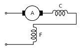
- 제어 권선
- 보상 권선
- 보극 권선
- 단층 권선
(정답률: 29%)
60. 3300/200V, 10kVA 단상 변압기의 2차를 단락하여 1차측에 300V를 가하니 2차에 120A의 전류가 흘렀다. 이 변압기의 임피던스 전압 및 % 임피던스 강하는 약 얼마인가?
- 125V, 3.8%
- 125V, 3.5%
- 200V, 4.0%
- 200V, 4.2%
(정답률: 17%)
4과목: 회로이론 및 제어공학
61. 나이퀴스트 판정법의 설명으로 틀린 것은?
- 안정성을 판정하는 동시에 안정도를 제시해 준다.
- 계의 안정도를 개선하는 방법에 대한 정보를 제시해 준다.
- 나이퀴스트 선도는 제어계의 오차 응답에 관한 정보를 준다.
- 루스-후르비츠 판정법과 같이 계의 안정여부를 직접 판정해 준다.
(정답률: 21%)
62. 그림의 신호 흐름 선도에서 y2/y1은?
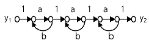
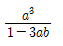
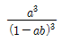
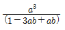
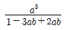
(정답률: 26%)
63. 폐루프 시스템의 특징으로 틀린 것은?
- 정확성이 증가한다.
- 감쇠폭이 증가한다.
- 발진을 일으키고 불안정한 상태로 되어갈 가능성이 있다.
- 계의 특성변화에 대한 입력 대 출력비의 감도가 증가한다.
(정답률: 17%)
64. 2차 제어계 G(s)H(s)의 나이퀴스트 선도의 특징이 아닌 것은?
- 이득 여유는 ∞이다.
- 교차량 |GH|=0이다.
- 모두 불안정한 제어계이다.
- 부의 실축과 교차하지 않는다.
(정답률: 25%)
65. 다음과 같은 상태방정식의 고유값 λ1, λ2는?
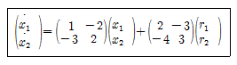
- 4,-1
- -4,1
- 6,-1
- -6,1
(정답률: 23%)
66. 단위계단 함수 u(t)를 z변환하면?
- 1
- 1/z
- 0
- z/(z-1)
(정답률: 28%)
67. 그림과 같은 블록선도로 표시되는 제어계는 무슨 형인가?
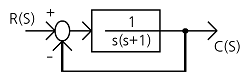
- 0
- 1
- 2
- 3
(정답률: 26%)
68. 제어기에서 미분제어의 특성으로 가장 적합한 것은?
- 대역폭이 감소한다.
- 제동을 감소시킨다.
- 작동오차의 변화율에 반응하여 동작한다.
- 정상상태의 오차를 줄이는 효과를 갖는다.
(정답률: 20%)
69. 다음의 설명 중 틀린 것은?
- 최소 위상 함수는 양의 위상 여유이면 안정하다.
- 이득 교차 주파수는 진폭비가 1이 되는 주파수이다.
- 최소 위상 함수는 위상 여유가 0이면 임계 안정하다.
- 최소 위상 함수의 상대 안정도는 위상각의 증가와 함께 작아진다.
(정답률: 20%)
70. 다음 논리회로의 출력 X는?
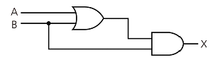
- A
- B
- A + B
- A ‧ B
(정답률: 19%)
71.
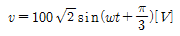
를 복소수로 나타내면?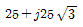
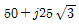
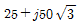
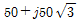
(정답률: 26%)
72. 인덕턴스 0.5H, 저항 2Ω의 직렬회로에 30V의 직류전압을 급히 가했을 때 스위치를 닫은 후 0.1초 후의 전류의 순시값 i[A]와 회로의 시정수 τ[s]는?
- i=4.95, τ=0.25
- i=12.75, τ=0.35
- i=5.95, τ=5.95
- i=13.95, τ=0.25
(정답률: 21%)
73. 다음 회로의 4단자 정수는?
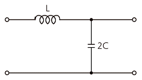
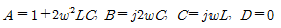
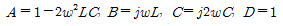
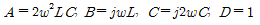
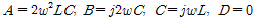
(정답률: 25%)
74. 전압의 순시값이 다음과 같을 때 실효값은 약 몇 V인가?
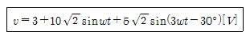
- 11.6
- 13.2
- 16.4
- 20.1
(정답률: 28%)
75. 한상의 임피던스가 6+j8[Ω]인 △부하에 대칭 선간전압 200[V]를 인가할 때 3상 전력[W]은?
- 2400
- 4160
- 7200
- 10800
(정답률: 23%)
76. 그림과 같이 r=1Ω 저항을 무한히 연결할 때 a-b에서의 합성저항은?
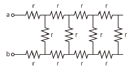
- 1+√3
- √3
- 1+√2
- ∞
(정답률: 29%)
77. 3상 불평형 전압에서 역상 전압이 35V이고, 정상전압이 100V, 영상전압이 10V라 할 때, 전압의 불평형률은?
- 0.10
- 0.25
- 0.35
- 0.45
(정답률: 30%)
78. 분포정수회로에서 선로의 단위 길이당 저항을 100Ω, 인덕턴스를 200mH, 누설 컨덕턴스를 0.5℧라 할 때, 일그러짐이 없는 조건을 만족하기 위한 정전용량은 몇 ㎌인가?
- 0.001
- 0.1
- 10
- 1000
(정답률: 18%)
79. f(t)=u(t-a)-u(t-b)의 라플라스 변환 F(s)는?
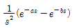
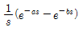
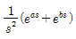
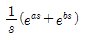
(정답률: 26%)
80. 4단자 정수 A, B, C, D중에서 어드미턴스 차원을 가진 정수는?
- A
- B
- C
- D
(정답률: 31%)
5과목: 전기설비기술기준 및 판단기준
81. 가공 약전류 전선을 사용전압이 22.9kV인 특고압 가공전선과 동일 지지물에 공가하고자 할 때 가공전선으로 경동연선을 사용한다면 단면적이 몇 mm2 이상인가?(오류 신고가 접수된 문제입니다. 반드시 정답과 해설을 확인하시기 바랍니다.)
- 22
- 38
- 50
- 55
(정답률: 21%)
82. 고압 계기용 변성기의 2차측 전로의 접지 공사는?(오류 신고가 접수된 문제입니다. 반드시 정답과 해설을 확인하시기 바랍니다.)
- 제 1종 접지 공사
- 제 2종 접지 공사
- 제 3종 접지 공사
- 특별 제 3종 접지 공사
(정답률: 22%)
83. 발전소ㆍ변전소 또는 이에 준하는 곳의 특고압 전로에 대한 접속상태를 모의모선의 사용 또는 기타의 방법으로 표시하여야 하는데, 그 표시의 의무가 없는 것은?
- 전선로의 회선수가 3회선 이하로서 복모선
- 전선로의 회선수가 2회선 이하로서 복모선
- 전선로의 회선수가 3회선 이하로서 단일모선
- 전선로의 회선수가 2회선 이하로서 단일모선
(정답률: 30%)
84. ACSR 전선을 사용전압 직류 1500V의 가공 급전선으로 사용할 경우 안전율은 얼마 이상이 되는 이도로 시설하여야 하는가?
- 2.0
- 2.1
- 2.2
- 2.5
(정답률: 23%)
85. 154kV 가공전선과 가공 약전류 전선이 교차하는 경우에 시설하는 보호망을 구성하는 금속선 중 가공 전선의 바로 아래에 시설되는 것 이외의 다른 부분에 시설되는 금속선은 지름 몇 mm 이상의 아연도 철선이어야 하는가?
- 2.6
- 3.2
- 4.0
- 5.0
(정답률: 20%)
86. 사용전압이 161kV인 가공 전선로를 시가지내에 시설할 때 전선의 지표상의 높이는 몇 m 이상이어야 하는가?
- 8.65
- 9.56
- 10.47
- 11.56
(정답률: 27%)
87. 특고압 가공전선이 삭도와 제2차 접근 상태로 시설할 경우에 특고압 가공전선로의 보안공사는?
- 고압 보안공사
- 제1종 특고압 보안공사
- 제2종 특고압 보안공사
- 제3종 특고압 보안공사
(정답률: 27%)
88. 갑종 풍압하중을 계산할 때 강관에 의하여 구성된 철탑에서 구성재의 수직 투영면적 1m2에 대한 풍압하중은 몇 Pa를 기초로 하여 계산한 것인가? (단, 단주는 제외한다.)
- 588
- 1117
- 1255
- 2157
(정답률: 25%)
89. 설계하중이 6.8kN인 철근 콘크리트주의 길이가 17m라 한다. 이 지지물을 지반이 연약한 곳 이외의 곳에서 안전율을 고려하지 않고 시설하려고 하면 땅에 묻히는 깊이는 몇 m이상으로 하여야 하는가?
- 2.0
- 2.3
- 2.5
- 2.8
(정답률: 27%)
90. 특고압 가공전선로에서 발생하는 극저주파 전자계는 자계의 경우 지표상 1m에서 측정시 몇 μT이하인가?
- 28.0
- 46.5
- 70.0
- 83.3
(정답률: 24%)
91. 전로를 대지로부터 반드시 절연하여야 하는 것은?
- 시험용 변압기
- 저압 가공전선로의 접지측 전선
- 전로의 중성점에 접지공사를 하는 경우의 접지점
- 계기용 변성기의 2차측 전로에 접지공사를 하는 경우의 접지점
(정답률: 19%)
92. 저압 전로 중 전선 상호간 및 전로와 대지 사이의 절연저항 값은 대지전압이 150V 초과 300V 이하인 경우에 몇 MΩ이 되어야 하는가?(오류 신고가 접수된 문제입니다. 반드시 정답과 해설을 확인하시기 바랍니다.)
- 0.1
- 0.2
- 0.3
- 0.4
(정답률: 25%)
93. 가공전선과 첨가 통신선과 의 시공방법으로 틀린 것은?
- 통신선은 가공전선의 아래에 시설할 것
- 통신선과 고압 가공전선 사이의 이격거리는 60cm 이상일것
- 통신선과 특고압 가공전선로의 다중 접지한 중성선 사이의 이격거리는 1.2m 이상일 것
- 통신선은 특고압 가공전선로의 지지물에 시설하는 기계기구에 부속되는 전선과 접촉할 우려가 없도록 지지물 또는 완금류에 견고하게 시설할 것.
(정답률: 21%)
94. 배류 시설에 대한 설명으로 옳은 것은?(오류 신고가 접수된 문제입니다. 반드시 정답과 해설을 확인하시기 바랍니다.)
- 배류 시설에는 영상 변류기를 사용하여 전식 작용에 의한 장해를 방지한다.
- 배류선을 귀선에 접속하는 위치는 귀선용 레일의 저항이 증가되는 곳으로 한다.
- 배류 회로는 배류선과 금속제 지중 관로 및 귀선과의 접속점을 제외하고 대지와 단락시킨다.
- 배류 시설은 다른 금속제 지중 관로 및 귀선용 레일에 대한 전식 작용에 의한 장해를 현저히 증가시킬 우려가 없도록 시설한다.
(정답률: 21%)
95. 일반주택 및 아파트 각 호실의 현관등은 몇 분 이내에 소등 되도록 타임 스위치를 시설해야 하는가?
- 3
- 4
- 5
- 6
(정답률: 34%)
96. 전기 울타리의 시설에 사용되는 전선은 지름 몇 mm 이상의 경동선인가?
- 2.0
- 2.6
- 3.2
- 4.0
(정답률: 16%)
97. 애자 사용 공사에 의한 저압 옥내배선시 전선 상호간의 간격은 몇 cm 이상인가?
- 2
- 4
- 6
- 8
(정답률: 25%)
98. 철도 또는 궤도를 횡단하는 저고압 가공전선의 높이는 레일면상 몇 m 이상인가?
- 5.5
- 6.5
- 7.5
- 8.5
(정답률: 31%)
99. 지중 전선로는 기설 지중 약전류 전선로에 대하여 다음의 어느것에 의하여 통신상의 장해를 주지 아니하도록 기설 약전류 전선로로부터 충분히 이격시키는가?
- 충전전류 또는 표피작용
- 누설전류 또는 유도작용
- 충전전류 또는 유도작용
- 누설전류 또는 표피작용
(정답률: 26%)
100. 발전소의 계측요소가 아닌 것은?
- 발전기의 고정자 온도
- 저압용 변압기의 온도
- 발전기의 전압 및 전류
- 주요 변압기의 전류 및 전압
(정답률: 27%)